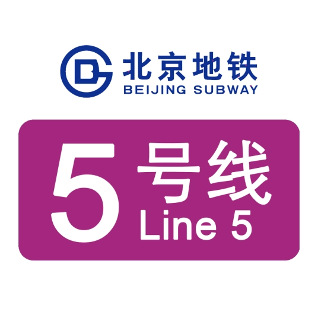
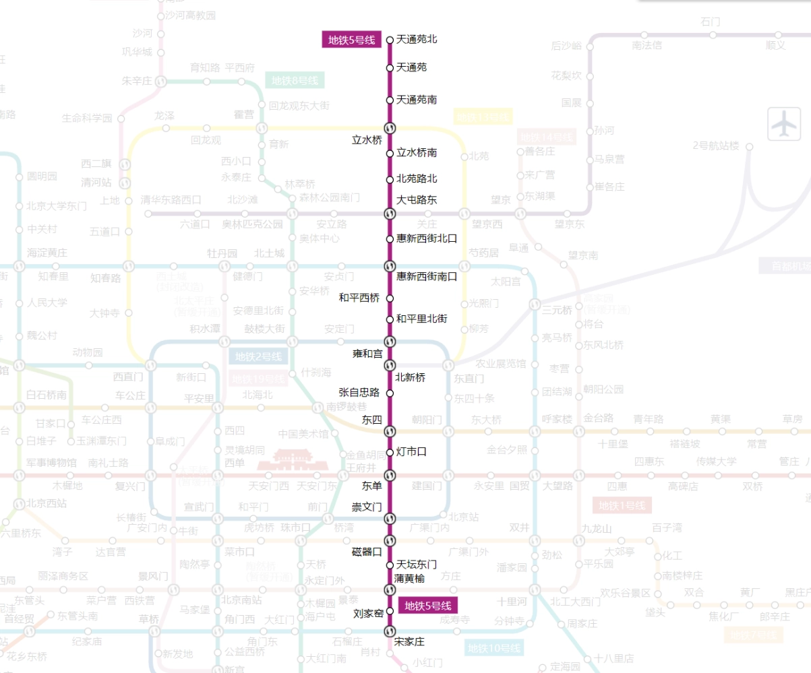
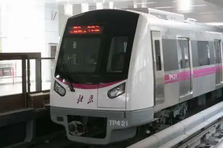

线路走向

车辆设施
SFM05

北京地铁5号线是中国国内第一条全部采用新车开通的线路。DKZ13采用全不锈钢车体，新车比起正在运营的地铁列车宽出100毫米，高出150毫米，每节列车是贯通的，站在车头可以直望到车尾。荷载人数可达1440人。在车厢内，随处都可以看到非常人性化的细节，比如很容易识别的安全标识、三向的扶手竖杆、橡胶防滑的车厢的地板等。车内的LCD显示屏会显示车辆运行信息和方向、停车站等功能。2008年北京奥运会开展期间，乘客可通过显示屏观看比赛直播。
除了造型别致，新地铁列车在启动时，乘客将不再听到那种普通地铁列车所发出的“哐哐”响声，而且整个列车在行进过程中也很平稳，即使是在起步停车的过程中，乘客也感觉不出车身的晃动。外观上，DKZ13列车车头呈向前弧形，车身有紫色线条，常被乘客昵称为“茄子”。